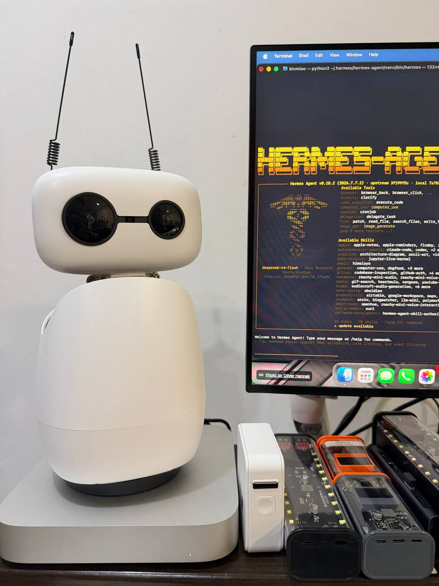

Reachy Mini x Hermes Agent: 构建下一代人机交互系统
Building the Next-Generation Human-Computer Interaction System with Reachy Mini and Hermes Agent

一、引言 / Introduction
我们正站在人机交互范式变革的起点。从键盘鼠标到触控屏幕，再到语音助手，每一次交互方式的跃迁都重新定义了人与机器的关系。而今天，物理形态的智能体（Embodied Agent），一个能看见你、听见你、与你对话、甚至拥有肢体语言的机器人，正在将这种关系推向一个全新的维度。
本文描述了我正在构建的一套系统：以 Pollen Robotics 的 Reachy Mini 机器人为物理载体，以 Nous Research 的 Hermes Agent 为认知核心，以 Obsidian 为长期记忆和知识管理中枢，逐步打造一个真正有「存在感」的 AI 伙伴。
We are standing at the dawn of a paradigm shift in human-computer interaction. From keyboards and mice to touchscreens and voice assistants, each leap in interaction modality has redefined the relationship between humans and machines. Today, embodied agents, robots that can see you, hear you, talk to you, and even express themselves through body language, are pushing this relationship into an entirely new dimension.
This article describes a system I am building: using Pollen Robotics' Reachy Mini as the physical embodiment, Nous Research's Hermes Agent as the cognitive core, and Obsidian as the long-term memory and knowledge management hub, gradually creating an AI companion with a genuine sense of presence.
二、已实现的语音交互系统 / The Voice Interaction System (Completed)
2.1 系统架构 / System Architecture
目前，我已经完成了完整的语音交互闭环，架构如下：
用户语音 -> 麦克风阵列 (Reachy Mini Audio)
-> Voice Activity Detection (VAD)
-> Whisper (STT, 语音转文字)
-> Hermes Agent (LLM 推理与决策)
-> Edge TTS (zh-CN-XiaoyiNeural, 文字转语音)
-> 扬声器播放 (Reachy Mini Audio Device ID 2)
2.2 技术要点 / Technical Highlights
- 低延迟语音链路：使用
sounddevice库直接驱动 Reachy Mini 的音频设备（设备 ID 2），绕过 GStreamer 等复杂 pipeline，实现了从说话到回应的流畅体验。 - 高质量中文语音：采用 Microsoft Edge TTS 的
zh-CN-XiaoyiNeural（小怡，柔和女声）作为默认语音，发音自然、情感丰富。 - 实时性优化：VAD 检测 + 静音自动截断，使系统能够在自然对话节奏中工作，无需用户手动触发录音命令。
2.3 为什么选择 Edge TTS？ / Why Edge TTS?
在 macOS 上，系统内置语音（如 Tingting、Siri）的发音质量与情感表现力远不如云端 TTS。Edge TTS 提供了接近真人发音的自然度，且延迟可控，是在当前硬件条件下的最佳选择。
On macOS, built-in system voices lack the naturalness and expressiveness required for extended conversation. Edge TTS provides near-human speech quality with controllable latency, making it the optimal choice given the current hardware constraints.
三、Obsidian：长期记忆与知识中枢 / Obsidian: The Long-Term Memory and Knowledge Hub
3.1 哲学基础 / The Philosophical Foundation
一个真正智能的助手必须拥有 记忆。不是 session 级别的短期上下文，而是跨越天、周、月的长期记忆。这是区分「工具」和「伙伴」的关键界限。
A truly intelligent assistant must possess memory, not session-level short-term context, but long-term memory spanning days, weeks, and months. This is the critical boundary that separates a tool from a companion.
3.2 Obsidian 的角色 / The Role of Obsidian
我将 Obsidian 作为 Hermes Agent 的文件系统级知识库，实现了以下能力：
| 能力 | 说明 |
|---|---|
| 随时灵感记录 | 任何时候想到的点子，通过语音或文字直接写入 Obsidian |
| 文章写作 | 借助 LLM 的推理能力，在 Obsidian 中撰写结构化的文章和笔记 |
| 文献调研 | 对长文本进行摘要、分析、关联，形成知识图谱 |
| 任务追踪 | 通过 Obsidian 管理日常任务和项目进度 |
3.3 工作流示例 / Workflow Example
用户（通过语音）：「帮我记录一个想法，关于用机器人做教育」
-> Hermes Agent 理解意图
-> 在 Obsidian 中创建/更新笔记
-> Edge TTS 回应：「已经记录到 Obsidian 的教育相关笔记中了」
-> 用户下次提问时，Agent 通过文件搜索 Recall 相关笔记
-> 形成跨 session 的知识连续性
这种工作流使得每一次对话都是在已有知识基础上的生长，而不是从零开始的重复。
This workflow ensures that every conversation is growth built upon existing knowledge, rather than repetition from scratch.
四、扩展蓝图：RAG 系统与项目管理 / Expansion Blueprint: RAG System & Project Management
4.1 为什么需要 RAG？ / Why RAG?
随着日志和笔记数量增长到上千篇，纯文件搜索（grep / ripgrep）的局限性逐渐显现：
- 关键词匹配无法理解语义相关性
- 跨文档的知识关联需要人工梳理
- 大量文档导致 recall 质量下降
RAG（检索增强生成） 正是解决上述问题的关键技术。
As logs and notes grow to thousands of documents, pure file search (grep / ripgrep) shows its limitations:
- Keyword matching cannot capture semantic relevance
- Cross-document knowledge connections require manual effort
- Large document volumes degrade recall quality
RAG (Retrieval-Augmented Generation) is the key technology to address these challenges.
4.2 RAG 系统设计 / RAG System Design
Obsidian Vault (千篇日志/笔记)
-> 文档分块 (Chunking), 按段落/标题智能分割
-> 向量嵌入 (Embedding), 转为语义向量
-> 向量数据库 (Vector DB), Chroma / FAISS / Qdrant
-> 语义检索 (Semantic Search), 用户提问 -> 检索最相关片段
-> Hermes Agent + 检索结果 -> 生成回答
4.3 项目管理集成 / Project Management Integration
未来的系统还将集成项目管理能力：
- 任务看板：通过 Obsidian 或 Notion API 维护项目状态
- 自动化日报/周报：RAG 检索本周进展，自动生成报告
- 跨项目知识复用：新项目启动时自动检索历史相关经验
- 决策日志：每次关键决策自动归档，形成可追溯的决策树
4.4 系统架构全景图 / Full System Architecture
User
-> voice / text / future vision and gestures
-> Reachy Mini as physical embodiment
- microphone array
- speaker output
- head and arm movement
- facial expressions and gestures
-> Hermes Agent as cognition
- VAD + Whisper STT
- LLM reasoning
- tool use
- Obsidian read/write
- file system operations
- web search
- future RAG retrieval
- future project management
-> Obsidian Vault as long-term memory
- ideas
- articles and research
- project documents
- logs
- future semantic search through embeddings and vector DB
五、愿景与展望 / Vision & Future Outlook
5.1 短期目标 / Short-term Goals
- [x] 语音交互完整闭环（STT -> LLM -> TTS）
- [x] Obsidian 长期记忆集成
- [ ] RAG 系统接入，管理千篇级笔记
- [ ] 项目管理功能（任务看板、周报自动生成）
- [ ] 更自然的对话打断与恢复
5.2 中期目标 / Medium-term Goals
- [ ] 视觉能力：Reachy Mini 摄像头接入，实现视觉问答
- [ ] 肢体语言：Reachy 的头部和手臂运动与对话内容同步
- [ ] 主动交互：系统根据环境变化主动发起对话
- [ ] 多模态记忆：同时存储语音、文字、图像信息
5.3 长期愿景 / Long-term Vision
打造一个真正有「存在感」的数字伙伴。它能记住你是谁、你关心什么、你做过什么，并在这个理解的基础上，主动地、自然地、有温度地与你协作。
这不是一个聊天机器人。这是一个驻留在物理世界中的 AI 存在。
To create a digital companion with genuine presence, one that remembers who you are, what you care about, and what you've done, and on that foundation, collaborates with you proactively, naturally, and with warmth.
This is not a chatbot. This is an AI presence residing in the physical world.
六、技术栈总结 / Technology Stack Summary
| 层级 Layer | 技术 Technology | 用途 Purpose |
|---|---|---|
| 物理载体 | Reachy Mini (Pollen Robotics) | 机器人本体、音频 I/O |
| 语音输入 | sounddevice + Whisper | 麦克风采集 + 语音转文字 |
| 语音输出 | Edge TTS (zh-CN-XiaoyiNeural) | 高质量中文语音合成 |
| 语音检测 | VAD (Voice Activity Detection) | 说话检测与静音截断 |
| 认知引擎 | Hermes Agent (Nous Research) | LLM 推理、工具调用、决策 |
| 基础模型 | DeepSeek V4 / 多模型后端 | 语言理解与生成 |
| 长期记忆 | Obsidian (iCloud ResearcherVault) | 知识管理、灵感记录 |
| 未来：语义检索 | RAG (Embedding + Vector DB) | 大规模文档语义搜索 |